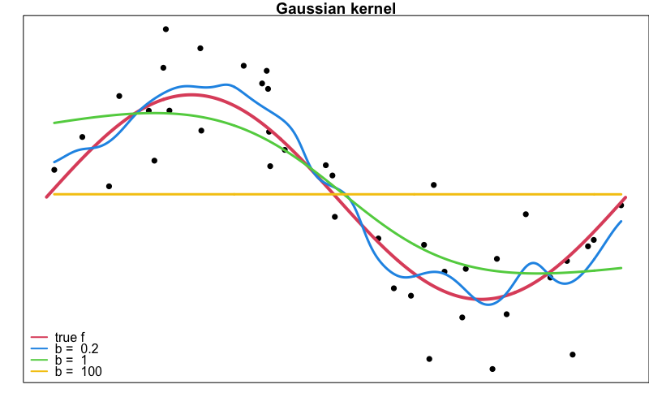

Homework 5 - Polynomial Regression and Nonparametric Regression
Due Friday, November 17, 11:59 PM on D2L
Homework Instruction and Requirement
Homework 5 covers course materials of Week 1 to 11.
Please submit your work in one PDF file including all parts to D2L > Assessments > Dropbox. Multiple files or a file that is not in pdf format are not allowed.
In your homework, please number and answer questions in order.
Your entire work on Statistical Computing and Data Analysis should be completed by any word processing software (Microsoft Word, Google Docs, (R)Markdown, Quarto, LaTex, etc) and your preferred programming language. Your document should be a PDF file.
Questions starting with (MSSC) are for MSSC 5780 students. MATH 4780 students could possibly earn extra points from them.
It is your responsibility to let me understand what you try to show. If you type your answers, make sure there are no typos. I grade your work based on what you show, not what you want to show. If you choose to handwrite your answers, write them neatly. If I can’t read your sloppy handwriting, your answer is judged as wrong.
Statistical Computing and Data Analysis
Please perform a data analysis using \(\texttt{R}\) or your preferred language. Any results should be generated by computer outputs, and your work should be done entirely by your computer. Handwriting is not allowed. Relevant code should be attached.
Polynomial Regression
A solid-fuel rocket propellant loses weight after it is produced. The following data are available:
| Months since Production, \(x\) | Weight Loss \(y\) (kg) |
|---|---|
| 0.25 | 1.42 |
| 0.50 | 1.39 |
| 0.75 | 1.55 |
| 1.00 | 1.89 |
| 1.25 | 2.43 |
| 1.50 | 3.15 |
| 1.75 | 4.05 |
| 2.00 | 5.15 |
| 2.25 | 6.43 |
| 2.50 | 7.89 |
- Fit a second-order polynomial \(y = \beta_0 + \beta_1x + \beta_{2}x^2 + \epsilon\) to the data.
Test the hypothesis \(H_0:\beta_2 = 0\). Comment on the need for the quadratic term in this model.
Are there any potential hazards in extrapolating with this model?
Compute the R-student residuals for the second-order model. Analyze the residuals and comment on the adequacy of the model.
Fit a second-order model \(y = \beta_0 + \beta_1z + \beta_{2}z^2 + \epsilon\) to the data, where \(z = x - \bar{x}\), i.e., \(z\) is the centered \(x\).
Find the correlation of \(x\) and \(x^2\), and the correlation of \(z\) and \(z^2\). Which one is larger?
(MSSC) Construct the design matrix \({\bf W} = \begin{bmatrix} {\bf w}_1 & {\bf w}_2 \end{bmatrix}\) of the model in (1), where \({\bf w}_1\) is the predictor \({\bf x}\) vector after unit normal scaling and \({\bf w}_2\) is the predictor \({\bf x}^2\) vector after unit normal scaling. That is, for each \(i = 1, 2, \dots, n\), \(w_{1i} = \frac{x_i - \bar{x}}{s_x}\), where \(s_x\) is the the standard deviation of \(x_i\)s; \(w_{2i} = \frac{d_i - \bar{d}}{s_d}\) where \(d_i = x_i^2\), and \(s_d\) is the standard deviation of \(d_i\)s. Similarly, construct the design matrix for the model in (5). Remember to use the predictor \(z\), the centered version of \(x\).
(MSSC) Compute \(\mathbf{\Sigma} = \mathbf{W}'\mathbf{W}/(n-1)\) of the model in (1) and (6). In fact, \(\mathbf{\Sigma}\) is the correlation matrix of predictors. Which model has higher correlation between predictors? The answer should be the same as the one of (6).
(MSSC) Compute the inverse of \(\mathbf{\Sigma}\) of the model in (1) and (5). In fact, the diagonal elements of the inverse matrix measures the degree of ill-conditioning. Does the centering of \(x\) help alleviate the ill-conditioning problem?
Nonlinearity Diagnostics
Consider the Canadian occupational-prestige data set Prestige in the carData package. Treat the variable prestige as the response, and education, income and women are the three predictors.
Generate the scatterplot matrix. Does the plot suggest any nonlinear relationship between the response and predictors or among predictors? Is the plot useful for detecting nonlinearity assumption of regression?
Fit the linear regression model, and plot the residual plots. Comment the plot.
Generate partial residual plots (component-plus-residual plot). Based on the plot, transform any predictors if necessary, and refit the regression. Check the partial residual plot of the refitted model and confirm that the nonlinearity issue is fixed.
Kernel Methods
Generate the 40 data points \(\{x_i, y_i\}_{i=1}^{40}\) from the model \(y = f(x) + \epsilon\), where \(f(x) = 2\sin(x)\) and \(\epsilon\sim N(0, 1)\). Use
seq()to generate the \(x_i\)s.Use
KernSmooth::locpoly()to generate Gaussian kernel smoothers with bandwidth 0.2, 1, and 100. Plot them as the figure shown below.
Use
locpoly()to fit the Gaussian local linear regressions (degree = 1) with bandwidth 0.2, 1, and 100. Generate the plot as the one in (2).Use
locpoly()to fit the Gaussian local quadratic regressions (degree = 2) with bandwidth 0.2, 1, and 100. Generate the plot as the one in (2).Use
loess()to fit the tricube local quadratic regressions with the span parameter \(\alpha = 0.2, 0.5, 0.9\). Generate the plot as the one in (2).Comment on your plots in (2)-(5), and discuss your findings. Which method you prefer?